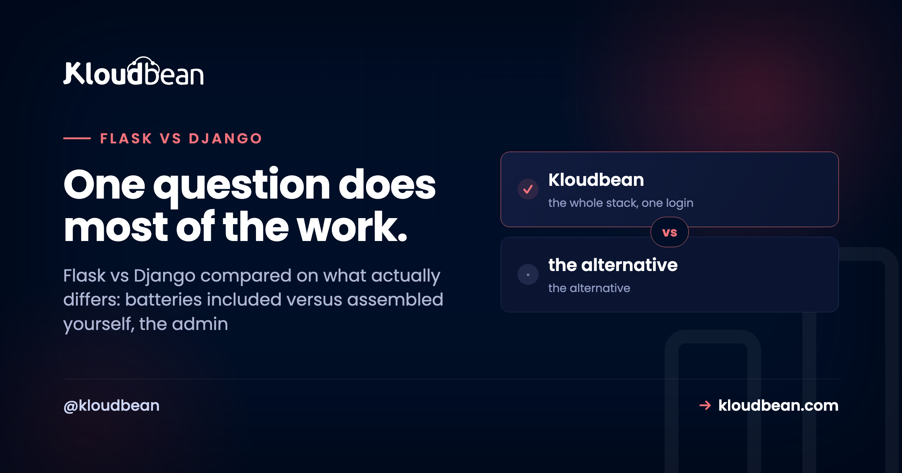

Flask vs Django: Pick by How Much You Want Decided For You

These two are not competing to be the better Python web framework, because they were built on opposite philosophies and both succeeded at what they set out to do. Django decides a great deal on your behalf: an ORM, migrations, an admin interface, authentication, forms, sessions, and a project layout, all chosen and wired together. Flask decides almost nothing beyond routing and request handling, and expects you to select the rest. So the useful question is not which is better. It is how much of your stack you want to choose, and whether the thing you are building has the shape Django already assumes.
Choose Django if you are building a database-backed application with users, forms, and an admin area, because it ships all of that already integrated and you will spend your time on features rather than assembly. Choose Flask for small services, APIs, and anything whose shape does not match Django's assumptions, or where you specifically want to pick your own ORM and components. For a brand new API today, also look at FastAPI, since async support and automatic validation are built in rather than added.
The one question that settles most projects
Does your application have a database, users who log in, forms, and a need for someone internal to view and edit records?
If yes, Django. Not because Flask cannot do those things, but because Django has already done them, tested them, and made them work together. You will assemble the same list in Flask from separate packages, each with its own conventions and its own maintainer, and the result will be a slightly worse Django that only your team understands.
If no, and you are building an API, a webhook receiver, a small service, or something whose structure looks nothing like a content-and-users application, Flask stops asking you to fit a mould.
| Django | Flask | |
|---|---|---|
| Philosophy | Batteries included | Minimal core, you extend |
| ORM | Built in, with migrations | Choose one, usually SQLAlchemy |
| Admin interface | Generated, free | Build it or add a package |
| Authentication | Included | Add an extension |
| Project structure | Prescribed | Yours to define |
| Learning curve | Steeper up front | Gentle to start |
| Small service or API | Heavier than needed | Good fit |
| Large team, long-lived app | Conventions help | Depends on your discipline |
The admin is the feature people underestimate
If I had to name the single reason Django wins projects, it is this, and it is routinely left as a bullet point in comparisons.
Django reads your models and generates a working administrative interface: list views, filters, search, create and edit forms, permissions, all from the model definitions you already wrote. Register a model and you have a usable back office.
# models.py
class Invoice(models.Model):
customer = models.ForeignKey(Customer, on_delete=models.PROTECT)
amount = models.DecimalField(max_digits=10, decimal_places=2)
paid = models.BooleanField(default=False)
due_date = models.DateField()
# admin.py, and this is the entire back office
@admin.register(Invoice)
class InvoiceAdmin(admin.ModelAdmin):
list_display = ("customer", "amount", "due_date", "paid")
list_filter = ("paid", "due_date")
search_fields = ("customer__name",)Consider what that replaces. Someone in operations needs to look up a record, correct a typo, mark something as paid, and find every unpaid invoice from last month. Without a generated admin, those are tickets, and each one becomes a small internal screen that a developer builds, styles, and maintains. Teams spend months of cumulative effort on exactly this, and the effort is invisible because it never appears as a feature.
Being fair about the limits: the Django admin is for trusted internal users, not a customer-facing dashboard, and pushing it into that role goes badly. But as a back office for staff, it is one of the highest-value things any web framework ships.
What Flask gets right, and it is not just simplicity
Flask is frequently described as the beginner choice, which undersells it. Plenty of experienced teams choose Flask deliberately.
Nothing is assumed about your data layer. If your data lives in an existing database with a schema you do not control, or in several services, or somewhere that is not a relational database at all, Django's ORM stops being an asset. Django can work against unmanaged tables, and you are then fighting the framework's centre of gravity. Flask has no opinion, so there is nothing to fight.
You can read the whole application. A small Flask service is comprehensible in an afternoon, top to bottom, with no framework magic to trace. For a service that one team owns and rarely changes, that is a real operational advantage.
It stays out of the way for unusual shapes. A webhook processor, an internal tool that wraps three APIs, a machine learning model behind an HTTP endpoint. None of those want migrations, sessions, or a template hierarchy.
# A complete, useful Flask service
from flask import Flask, request, jsonify
app = Flask(__name__)
@app.post("/webhooks/payment")
def payment():
event = request.get_json(silent=True) or {}
# Accept fast, process out of band
enqueue(event)
return jsonify(status="accepted"), 202The honest counterpoint: Flask's freedom means every project makes its own decisions, so two Flask codebases at the same company can look nothing alike. Django projects are boringly similar to each other, and on a team with turnover that similarity is worth a lot.
The mistake that actually costs money
Not picking the wrong framework. Picking Flask for something Django-shaped and then rebuilding Django badly.
The path is predictable. You start with Flask because it is simpler, which is true. You add SQLAlchemy for the database, then Alembic for migrations, then Flask-Login for sessions, then WTForms for form handling, then a permissions scheme you invent, then a small admin area because operations keeps asking. Six months later you have assembled the feature set Django ships with, except yours is held together by decisions nobody wrote down and integration code only you have read.
The reverse mistake is real and much cheaper. Django on a small API is heavier than it needs to be, and it works fine, and you can leave it alone.
So the asymmetry is the practical point: choosing Django for something small costs you some unused machinery. Choosing Flask for something large costs you the thing Django spent nearly two decades getting right.
Where FastAPI belongs in this decision
Leaving it out would date this article, because a good share of people asking Flask or Django in 2026 are building an API, and for a new API neither is the obvious answer any more.
FastAPI is async-first, validates requests through type hints with Pydantic, and generates OpenAPI documentation from the code. On a Flask service you would add validation and documentation yourself, and keep the docs honest by hand.
| Building this | Reach for |
|---|---|
| Database-backed app with users and an admin | Django |
| A new JSON API, especially async or IO-heavy | FastAPI |
| Small service, unusual shape, or existing schema | Flask |
| An API on top of an existing Django app | Django REST Framework |
| Your team already knows one of them well | That one |
That last row is not filler. Framework familiarity is a genuine technical advantage, and a team shipping confidently in Flask will beat the same team learning Django on a deadline.
One caveat on async: it is worth having because it helps a specific bottleneck, many concurrent requests spending their time waiting on other services, rather than because async is newer. If your endpoints are CPU-bound or your traffic is modest, async buys you very little and adds a way to block the event loop by calling something synchronous in the wrong place.
Deployment is nearly identical, which surprises people
A frequent assumption is that one is harder to host. In practice the shape is the same for both, and getting it wrong looks the same too.
Neither framework's built-in development server belongs in production. Both run behind a WSGI server, usually Gunicorn, with nginx in front terminating TLS and serving static files. Both read configuration from environment variables. Both need a real database rather than SQLite on an ephemeral disk.
# Flask
gunicorn --workers 3 --bind 127.0.0.1:8000 "app:app"
# Django
gunicorn --workers 3 --bind 127.0.0.1:8000 myproject.wsgi:application
# FastAPI, which is ASGI rather than WSGI
gunicorn -k uvicorn.workers.UvicornWorker --workers 3 app:appTwo differences worth naming. Django has more production settings that must change from their development defaults, notably DEBUG, ALLOWED_HOSTS, and the secret key, and it needs collectstatic run as part of deployment, which is the single most common reason a freshly deployed Django site loads with no CSS. Flask has fewer settings to get wrong and correspondingly fewer guardrails.
Our step-by-step guides cover each properly: deploying a Flask app, deploying a Django app including the collectstatic trap, and deploying FastAPI. If you are choosing a process model, Gunicorn versus Uvicorn is the companion piece.
Can you change your mind later?
Partly, and it is worth being clear rather than reassuring.
Your business logic is Python and it moves. Your database moves, since both end up talking to PostgreSQL or MySQL and the data is portable. What does not move is everything framework-shaped: ORM models and queries, migrations, templates, forms, authentication, middleware, and URL routing. That is not a port, it is a rewrite of the outer layer with the same core.
Which means the decision matters more than most technology choices, and it is still not fatal. The way to keep the option open is unglamorous: keep business logic in plain Python modules that do not import the framework, and treat views as a thin layer that parses input and calls into them. Teams that do this find framework changes tedious rather than catastrophic. Teams that put business rules inside views and model methods find the two inseparable.
flask vs Django and the environment it runs in
Both are supported here, which is the honest reason this comparison can stay neutral: whichever you choose, we host it, so there is nothing to sell you by nudging the answer.
Concretely, Kloudbean runs managed Python applications including Flask, Django, and FastAPI, with runtime configuration for Python available in the UI rather than only in files. Managed PostgreSQL, MySQL, MariaDB, Redis, Elasticsearch, and MongoDB are one-click and standalone with backups, which matters because both frameworks want a real database and neither should be using SQLite on a server. Free SSL is issued and renewed, cron jobs are configurable from the UI without SSH for the scheduled work most Django projects accumulate, and a Git integration builds and deploys on every push with live build logs.
One honest note in the same spirit as the rest of this article: one-click staging covers WordPress and Laravel, so on a Python project you would create your own staging copy. Worth knowing before you plan a release process rather than after.

More on flask vs Django
Once you have chosen: deploy Django, deploy Flask, or deploy FastAPI. On the process layer, Gunicorn versus Uvicorn. On the database underneath, MySQL versus PostgreSQL and adding a managed database. On configuration, environment variables done right. And on background work, Celery with Redis.
A rehoming, not a rewrite.
Standard code moves onto a standard Linux server, so this is a migration rather than a rewrite. Pick from seven clouds, keep push-to-deploy, and get help moving the first workload across.
- ✓ Free migration assistance
- ✓ Free trial
- ✓ Seven cloud providers
- ✓ Flat monthly price
- ✓ Managed databases
- ✓ Git deploy
Plans from $8/mo · Free migration assistance · Free trial
FAQ
Should I use Flask or Django?
Django if your application is database-backed with users, forms, and a need for an internal admin area, because all of that ships already integrated. Flask if you are building a small service or API, or if your data lives somewhere that does not suit Django's ORM. The deciding question is how much of the stack you want to choose yourself.
Is Flask easier than Django?
Easier to start, not necessarily easier overall. Flask has far less to learn on day one because it does much less. As a project grows you end up selecting and integrating an ORM, migrations, authentication, and forms yourself, which is work Django has already done. The difficulty does not disappear, it moves later and becomes yours.
Is Django too heavy for a small project?
It is more than a small project needs, and that is rarely a real cost. Unused Django components do not slow you down meaningfully, and the project structure keeps things tidy as it grows. The expensive mistake runs the other way: choosing Flask for a large application and gradually rebuilding Django's feature set with less-tested parts.
Which is better for APIs?
For a brand new API, FastAPI is usually the strongest choice, with async support, validation from type hints, and generated OpenAPI documentation built in. Flask is a good fit for simple endpoints. If you already have a Django application and want an API over the same models, Django REST Framework is more sensible than adding a second framework.
Is Django faster than Flask?
Not in a way that will decide your project. Both spend most of their time waiting on your database, and a poorly indexed query costs far more than any framework overhead. Flask has less per-request machinery, so a trivial endpoint benchmarks faster, which is not representative of real applications. Choose on fit and fix your queries.
Can I migrate from Flask to Django later?
Partly. Your business logic is Python and your database is portable, but ORM models, migrations, templates, forms, authentication, and routing are framework-specific and get rewritten. Keeping business logic in plain modules that do not import the framework makes such a change tedious rather than catastrophic, and it is good practice regardless.
What is the Django admin and why do people mention it so much?
It is an administrative interface Django generates from your models: list views, filters, search, and edit forms with permissions, essentially for free. It replaces the internal screens teams otherwise build one ticket at a time. It is intended for trusted staff rather than as a customer-facing dashboard, and within that scope it saves a remarkable amount of work.
Do Flask and Django deploy differently?
Barely. Both run behind a WSGI server such as Gunicorn with nginx in front, both read configuration from environment variables, and neither development server belongs in production. Django has a few more production settings to change, notably DEBUG, ALLOWED_HOSTS, and the secret key, and it needs collectstatic in the deploy, which is the usual reason a new Django site appears with no styling.